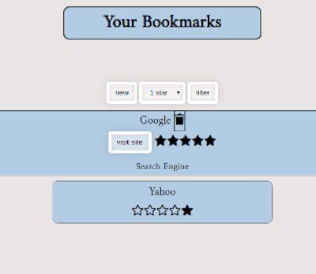

Ian Drews
BIO
Hi there I'm Ian. I refresh web pages, read documentation and occasionally even get to write code.
I play nicely with Javascript, Jquery and CSS I can often make them play nicely with each other as well.
When I’m not doing any of that I like playing DND, baking and watching entirely too much Televison.
In my previous life I was a pastry chef in a number of fast paced resturants, I worked in a lot of great teams cooking over the years and I'm excited to be a part of a great one while coding as well . I bring that same attention to detail and ability to function in high stress situations to programming, I do my best not to bring kitchen language along with it.
Bookmark App
This is the Bookmark app that I made as part of Thinkful's Web Development Career Path. It uses a thinkful API to record and store bookmarks entered into it for later perusal.
Made with Jquery, Javascript and CSS
Live Site Github Repo project 2
Ad irure esse mollit reprehenderit nostrud culpa veniam. Laboris labore consequat esse Lorem exercitation ex in. Anim qui laborum qui ea et eiusmod ullamco est et mollit consequat proident. Reprehenderit consectetur et incididunt ex fugiat. Nisi deserunt labore laborum commodo.
project 3
Ad irure esse mollit reprehenderit nostrud culpa veniam. Laboris labore consequat esse Lorem exercitation ex in. Anim qui laborum qui ea et eiusmod ullamco est et mollit consequat proident. Reprehenderit consectetur et incididunt ex fugiat. Nisi deserunt labore laborum commodo.